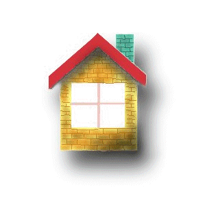

<!DOCTYPE html>
<html lang="en">
<head>
    <meta charset="UTF-8">
    <title>Title</title>
    <script src="https://cdn.bootcss.com/jquery/3.4.1/jquery.js"></script>
    <link href="https://cdn.bootcss.com/twitter-bootstrap/4.3.1/css/bootstrap-grid.css" rel="stylesheet">
    <script src="https://cdn.bootcss.com/twitter-bootstrap/4.3.1/js/bootstrap.bundle.min.js"></script>
    <link rel="stylesheet" type="text/css" href="../asserts/css/default.css"/>
    <link rel="stylesheet" type="text/css" href="../asserts/css/component.css"/>


    <!-- HTML5 Shiv 和 Respond.js 用于让 IE8 支持 HTML5元素和媒体查询 -->
    <!-- 注意： 如果通过 file://  引入 Respond.js 文件，则该文件无法起效果 -->
    <!--[if lt IE 9]>
    <script src="https://oss.maxcdn.com/libs/html5shiv/3.7.0/html5shiv.js"></script>
    <script src="https://oss.maxcdn.com/libs/respond.js/1.3.0/respond.min.js"></script>
    <![endif]-->

    <script src="../asserts/js/finduser1.js"></script>

</head>
<body>
<div id="div">
   <!--  &#45;&#45; html
    -->
</div>


</body>
</html>